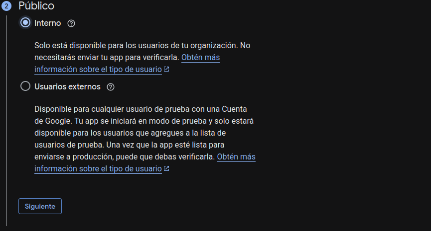
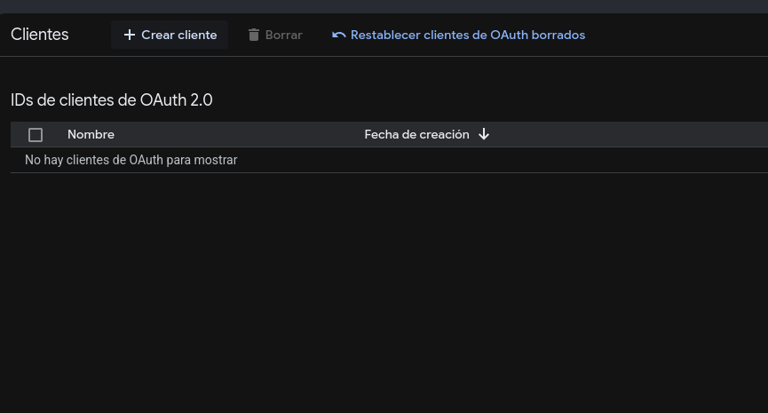
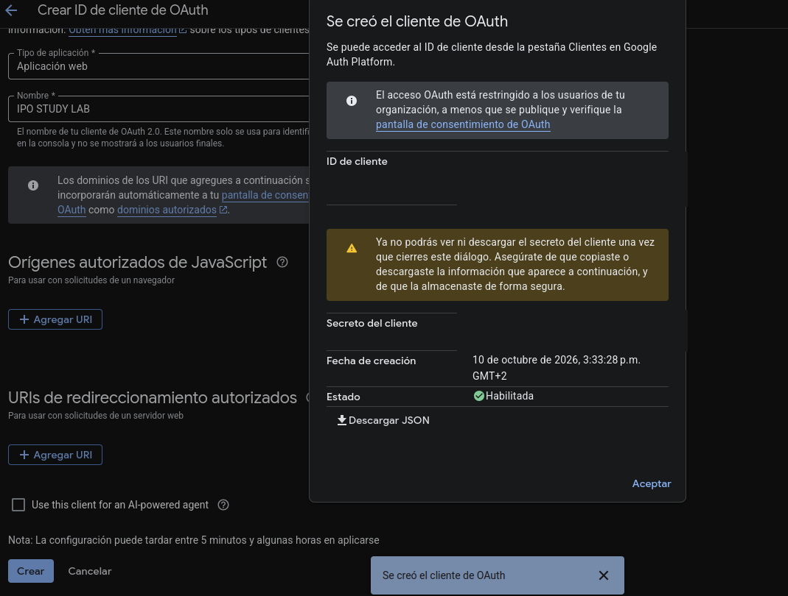

Mi cuenta
Guarda tu progreso y continúa estudiando desde cualquier dispositivo.
Abrir mi semanaConecta tu cuenta de Google
Usa tu cuenta institucional UJA. El selector de Google te permitirá elegir la cuenta correcta. El progreso se sincroniza en el espacio privado de esta aplicación en tu Drive.
Guía de configuración (solo para quien administra la web)
En Google Cloud Console, habilita Google Drive API y configura el consentimiento OAuth. Para esta app se usa el ámbito privado drive.appdata; no se necesita client secret en el navegador.


- Selecciona tipo Aplicación web.
- En Orígenes autorizados de JavaScript, añade
https://ajgarciarias10.github.io(sin/ipo/). La captura del cliente aún no tiene ningún origen autorizado, así que este paso falta. - El proyecto debe admitir cuentas UJA: usa Interno si pertenece al Google Workspace de la universidad; si usas Externo en modo de prueba, añade las cuentas UJA como usuarios de prueba.
- El Client ID público ya está configurado en
cuenta-config.js. No copies el secreto a esta web.

Mi progreso
Evolución desde tu primer test guardado.
Cargando tu historial…
Crear un mapa mental con NotebookLM
Elige un tema ya impartido y copia el prompt en NotebookLM.
Copias de seguridad
También puedes descargar tu progreso y todos tus tests realizados como archivo JSON para guardarlos directamente en tu Google Drive, enviártelos por correo o restaurarlos en cualquier momento.
Cómo se guarda y protege mi progreso
Tu plan de estudio, sesiones, tests, errores y competencias se guardan en el espacio privado de esta aplicación en tu Google Drive institucional. El responsable de esta web no recibe ni almacena tu progreso.
La aplicación solo pide acceso a sus propios datos privados de Drive y a tu correo para identificar tu cuenta. No tiene acceso a tus documentos ni a tus mensajes.
Después de conectar puedes importar el progreso que ya tenías en este navegador si tu cuenta aún no tiene datos. En otros dispositivos, conecta la misma cuenta para recuperarlo.
Durante el estudio verás si el progreso está guardado o pendiente de sincronizar. Si Google pide renovar la sesión, vuelve a conectar la misma cuenta. Antes de cerrar sesión, guarda los cambios pendientes.
Puedes eliminar los datos y retirar el acceso desde Google Drive, en Configuración → Administrar aplicaciones. Cerrar sesión en esta web retira la copia local de la cuenta de este equipo.